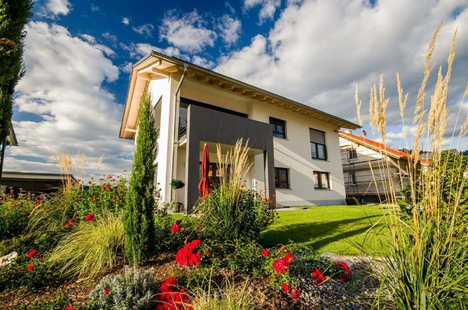
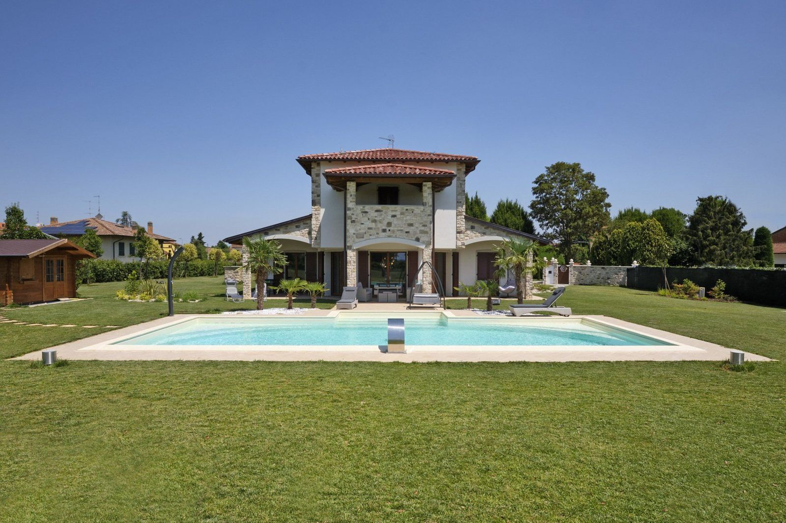
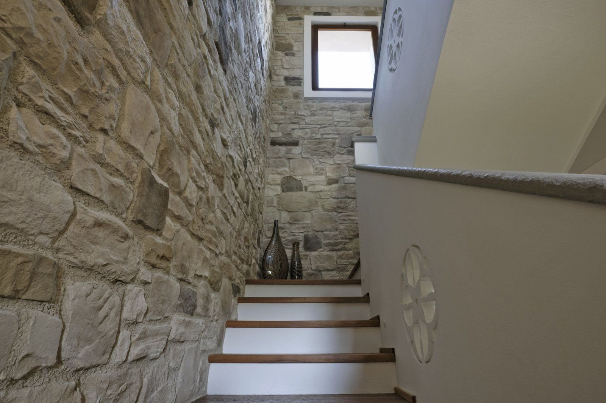
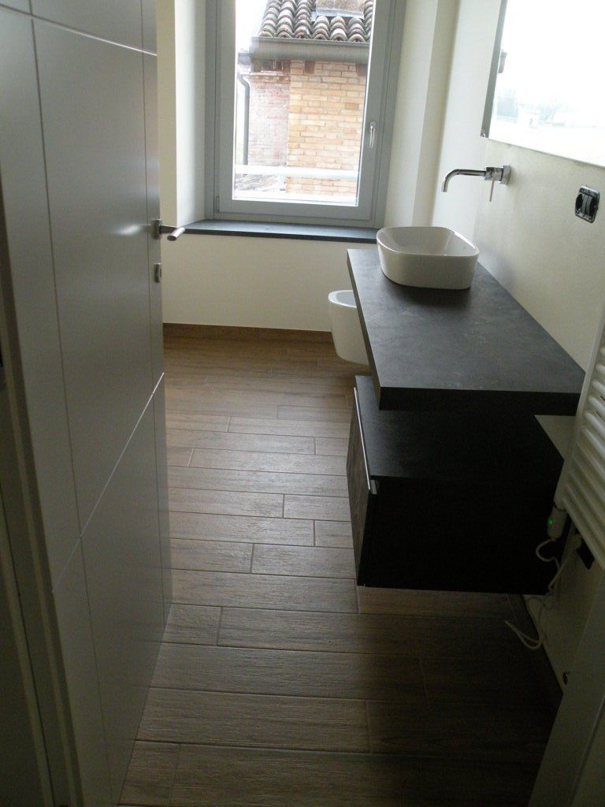
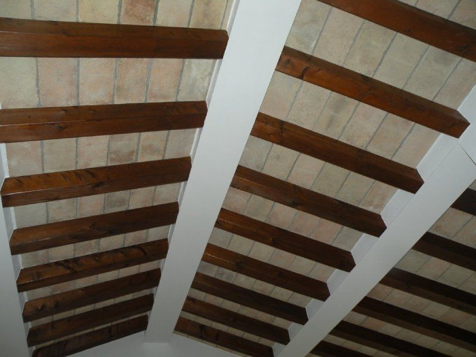
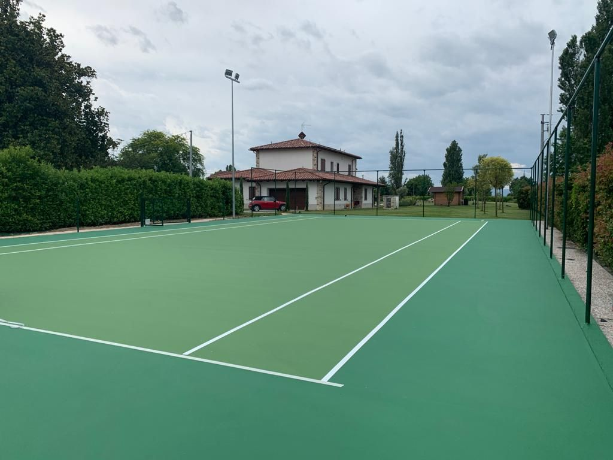

Sopralluogo
Partiamo dalle tue esigenze e dalle caratteristiche dell’immobile.
Impresa edile · Parma e provincia
Anni di esperienza.
Radici a Parma.
Da oltre quarant’anni diamo forma agli spazi di chi vive e lavora a Parma. Nuove costruzioni, ristrutturazioni. Un unico interlocutore.
Dalla prima idea, fino all’ultima finitura.

Spazi da vivere.Le nostre realizzazioni 01 — 08
01 / L’impresa
La solidità di un’impresa si vede nei dettagli. E nelle persone che seguono il tuo progetto.
Siamo Volpi Costruzioni. Da oltre quarant’anni lavoriamo a Parma e provincia: costruiamo, ristrutturiamo e coordiniamo ogni intervento. Un dialogo diretto, dal primo sopralluogo alla consegna delle chiavi.
02 / Cosa facciamo
Costruire. Rinnovare. Riqualificare.
03 / Le realizzazioni
Ogni spazio ha una storia. Qui comincia la nostra: abitazioni, ristrutturazioni e luoghi da vivere.







Ascoltiamo le tue esigenze e facciamo un sopralluogo per capire insieme da dove partire.
Valutiamo le soluzioni e i materiali più adatti al tuo progetto, alle tue esigenze e al tuo budget.
Realizziamo le opere e coordiniamo i professionisti coinvolti, seguendo le lavorazioni da vicino.
Completiamo l’intervento e le finiture. La formula chiavi in mano ti accompagna fino alla consegna.
05 / Sempre al tuo fianco
Partiamo dalle tue esigenze e dalle caratteristiche dell’immobile.
Un unico interlocutore coordina le lavorazioni e i professionisti coinvolti.
Seguiamo la realizzazione e le finiture fino al completamento del lavoro.